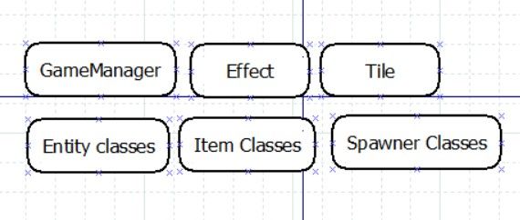
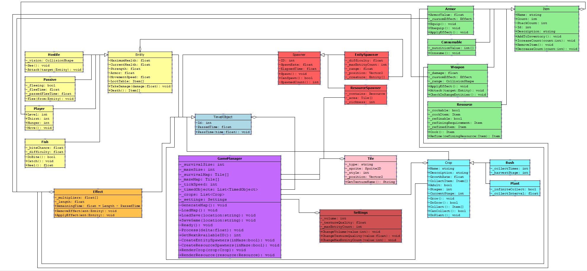

1. Introduction
2. Starting Class Diagram

2.1. Full Class Diagram

2.2. List of classes
- GameManager
- Effect
- Tile
- Entity
- Hostile : Entity
- Passive : Entity
- Player : Entity
- Item
- Weapon : Item
- Armor : Item
- Resource : Item
- Consumable : Item
- EntitySpawner
- ResourceSpawner
2.3. Underlying systems
2.3.1. Entity
A base class for creatures, only exists inherited
Attributes:
Health : float : The health of the entity
Strength : float : The attack damage of the creature
Armor : float : How much damage in percentage the entity can reduce from the taken damage
MovementSpeed : float : How fast the entity moves in space
Effects : Effect[] : The applied effect to the entity
Operations:
PassTime : void : Passes time in the creature (Counts down effect timers)
2.3.2. Hostile
Attributes:
Vision : CollisionShape : A collider which is set to check for player detection, does not collide physically with objects
Operations:
See() : void : Check if player is in vision
Attack() : void : Move towards the player, if close deal damage to it.
2.3.3. Passive
Attributes:
Fleeing : bool : Is the entity fleeing from another entity?
FleeTime : float : How long does the entity flee from another entity
PassedFleeTime : float : Time passed since fleeing
Operations:
Flee(From:Entity) : void : Start fleeing from an entity, going in a different direction from it
2.3.4. Player
Attributes:
Inventory : Item[] : The items the player has with themselves, these are item objects such as resources, the player can use these items to sustain itself
Level : int : The level of the player
Hunger : int : How much food does the player has currently (max: 100)
Thirst : int : How much water does the player has currently (max: 100)
Operations:
Move : void : Move the player according to user input
2.3.5. Item
An abstract class for items in the players inventory
Attributes:
Name : String : The name of the item
Count : int : How many of this item is currently in this stack
StackCount : int : How many of this item can be in one stack
id : int : An id for the item, all items have their own id, pre-set by the developers
Operations:
AddToInventory : void : Adds the item in the players inventory, if there is space inside it
IncreaseCount(count : int) : void : Increase the count in the stack, if the stack limit is reached, create another instance of the
item with the remaining counter, if the inventory is full, delete the remaining
RemoveItem : void : Completely removes the item from the players inventory
DecreaseCount(count : int) : void : Removes the given amount of items of this type from the players inventory, not just from this stack, but from other stacks as well
2.3.6. Armor
This class represents wearable items, wearable items can be put in the inventories specific slot, where it will give the effects of the armor
Attributes:
ArmorValue : float : The number which increases the wearers armor by this amount
CustomEffect : Effect : If the armor has an effect, apply it to the wearer, if not this value is null
Operations:
Equip : void : Gives the effects, gets called when the armor is put in the corresponding slot
Unequip : void : Removes the effect, gets called when the armor gets removed the corresponding slot
ApplyEffect : void : Gets called every frame, when the armor is equipped, if called apply the effect on the player, for 5 seconds
2.3.7. Consumable
This class represents the items te player can use to decrease their hunger and thirst
Attributes:
NutritionValue : int[] : The first number is how much Food is restored, the second number is how much Thirst is restored
RotTime : float : Some foods can rot, which means they get deleted from the players inventory, this timer represents this
Operations:
Consume : void : Consumes the food, decrease the item num by one, and increase player stats, with the nutrition value
TimePass(delta : float) : void : With this function the consumables rot timer is decreased, if it hits 0, then delete
2.3.8. Weapon
The weapon class corresponds to items that can be used as a weapon against other entities
Attributes:
Damage : float : How much damage is added to the players strength, this damage is multiplied by the effects on the player
CustomEffect : Effect : If the weapon has an effect, apply it to the wearer, if not this value is null
Range : CollisionShape : This is the range of the weapon, only entities within the range can be damaged by the weapon
Operations:
ApplyEffect : void : Gets called every frame, when the weapon is in use, when called apply the effect on the player, for 5 seconds
Attack(Target : Entity) : void : Deal damage to the given entity, gets called inside the checkInRangeEntities function.
CheckInRangeEntities : void : Checks if any entities are inside the range, if yes, the call the attack method on them. This method gets called when the player uses an attack action, when using the weapon
2.3.9. Resource
The resource class is reserved for crafting materials
Attributes:
Age : float : How old is the object (counted from arriving in the inventory)
SourceID : int : The id of the resource spawner its from.
Refined : bool : True if the resource has been refined by the player, false if it has not been refined yet
Operations:
Operations:
Refine(RefiningResource : Resource) : void : Refine resource with an other resource (ex.: wood with metal)
2.3.10. GameManager
The game manager controls the game
Attributes:
SurvivalSize : int : Is the survival fields size
MazeSize : int : Is the mazes size
SurvivalMap : Tile[][] : A matrix containing all tiles of the map
TicksSpeed : int : Per second tick count
Operations:
GenerateMap : void : Generates both the survival and maze map
LoadMap : void : Loads the generated or loaded map
LoadSave(Location : string) : void : Loads a save file
Ready : void : Gets called then object is created decides if map generation is neccessary, sets everything up
Process(delta : float) : void : Gets called every frame with the passed time between frames
2.3.11. Tile
Tiles are what make up the map
Attributes:
Type : String : The type of the tile (Grass, Water, etc)
MazeTile : bool : If the tile is a maze tile, then scale it according to the survival and maze size
Sprite : Sprite2D : Essentially just the texture on the screen
Style : int : Some textures like grass, have different varieties, this number is the variety number
Operations:
GetTextureName : String : Returns the texture name in the file system
2.3.12. Effect
The effect class is used for buffing / debuffing entities
Attributes:
Multipliers : float[] : The multipliers stats are changed
Length : float : The length of the effect
PassedTime : float : The time the effect has been applied
Remaining time : float : The remaining time from the effect
Operations:
PassTime(delta : float) : void : Increase the Passed time value with the delta, if its over the length, remove he effect
RemoveEffect(ent : Entity) : void : Remove the effect from the given entity, if applicable
ApplyEffect(ent : Entity) : void : Add the effect to the given entity
2.3.13. EntitySpawner
The entity spawner component spawns entities on the world
Attributes:
Difficulty : float : The difficulty multiplier of the entities spawned by this spawner
SpawnerId : int : An unique ID for the spawner
SpawnRate : float : The rate an entity is spawned in seconds
Range : float : The range in which entities are spawned
Position : float[] : The position of the spawner, X, Y coordinates
Creature : Entity[] : An array of entities which are randomly chosen at each spawn
Operations:
Spawn : void : Spawns an entity if available
CheckSpawnedCount : int : Check the number of entities spawned
2.3.14. ResourceSpawner
The resource spawner places resource farming locations on the map
_Resource : Resource : The resource created by the spawner
Area : Tile[] : The tiles a resource can be placed on
Richness : int : The number of resources that can co-exist in the area
RespawnRate : float : The respawn rate of resources, given in seconds
Operations:
TrySpawn : void : Tries to place a farm-able object on the map
CheckResourceCount : int : Check the number of resources spawned in the area